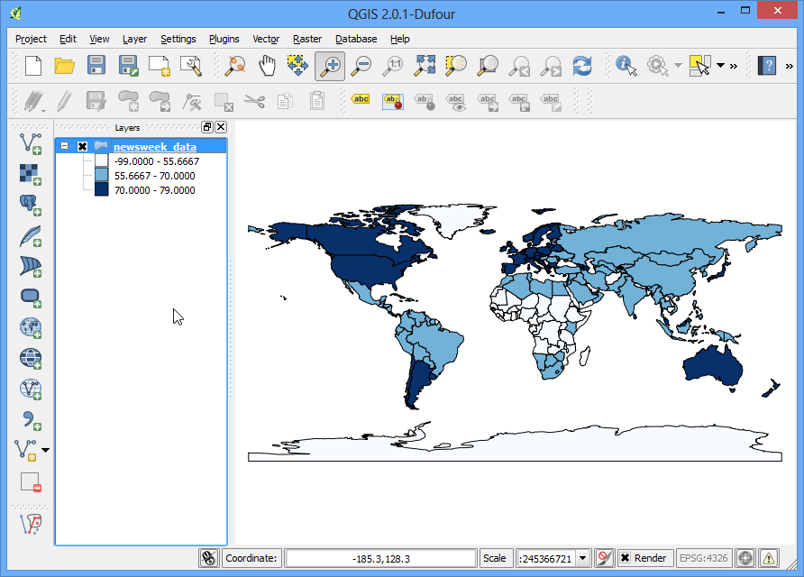
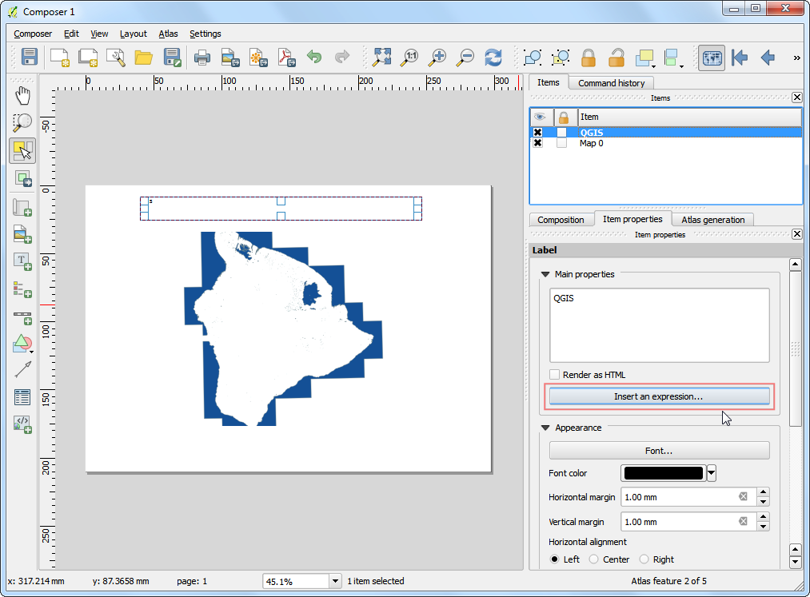
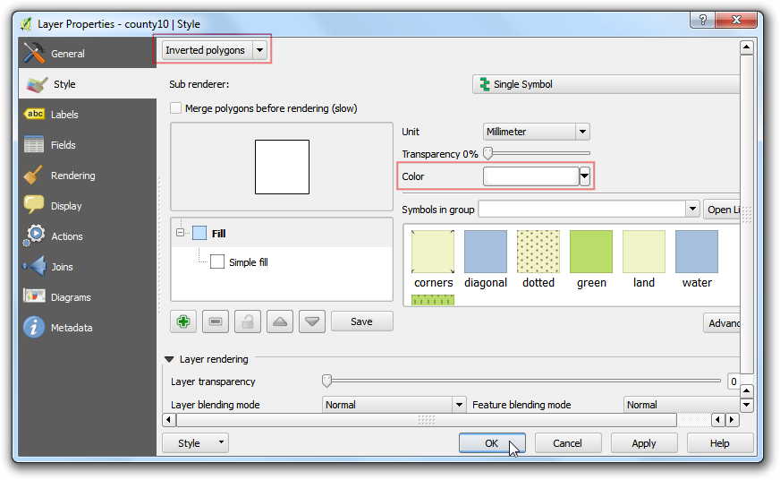
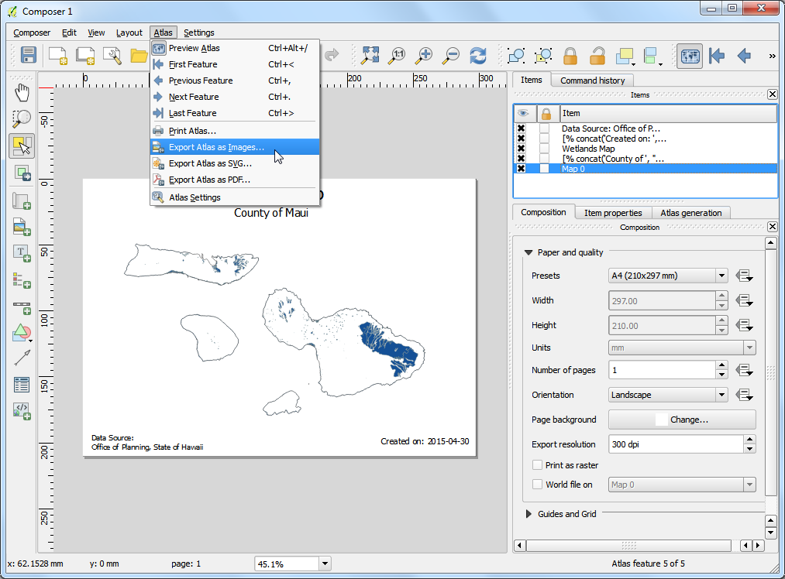

Création automatisée de cartes avec l’Atlas du composeur d’impresson
Si votre organisation publie des cartes papier ou en ligne, vous pouvez avoir besoin de créer plusieurs cartes à partir du même modèle, cela peut être une carte par zone administrative ou sur différentes régions. La création manuelle de ces cartes peut prendre du temps et si vous souhaitez les mettre à jour régulièrement, cela peut devenir une véritable corvée. QGIS dispose de l’outil Atlas qui peut vous permettre de créer un modèle utilisable pour les différentes régions à cartographier.
Si vous n’êtes pas familier avec le composeur d’impression, vous pouvez reprendre le tutoriel Créer une carte
Description de l’exercice
Ce tutoriel vous montre comment créer une carte des zones humides pour chaque région de l’état de Hawaii
Autres compétences que vous allez développer
Comment utiliser le style “polygones inversé” pour représenter des zones hors des polygones.
Comment réaliser un style basé sur une règle pour représenter uniquement les entités présentes dans un Atlas
Appliquer les expressions pour créer des étiquettes dynamiques dans le composeur d’impression.
Procédure
Ouvrir QGIS et cliquer sur le :menu:
:couches –> ajouter une couche –> ajouter une couche vecteur.

Ouvrir le fichier HI_Wetlands.shp.zip et cliquer sur ouvrir.

Sélectionner la couche HI_Wetlands_Poly et cliquer sur OK.

Vous aller voir les polygones représentant des zones humides sur tout l’état de Hawaii.
Étant donné que nous souhaitons réaliser des cartes différentes pour chaque région de l’état, nous allons utiliser la couche de frontière.
Aller dans le :menu:`couche –> Ajouter une couche –> ajouter une couche vecteur`puis, explorer le fichier ``county10.shp.zip`` enfin cliquer sur . Click ouvrir.

Aller dans le :menu:`Projet –> Nouveau composeur d’impression`.

Laisser le titre du composeur vide et cliquer sur OK.

aller dans le :menu:`Layout –> Ajouter une carte`.

Tracer un rectangle pour insérer la carte en maintenant le clique gauche de la souris.

Effectuer un mouvement de molette vers le bas dans l’onglet propriété de l’objet et vérifier que contrôlé par l’Atlas soit bien coché.
Cela va indiquer au composeur que l’étendue de la carte affichée sera déterminée par l’outil Atlas.

Cliquez sur l’onglet de génération d’atlas. Vérifiez que la case générer un atlas est bien cochée. Sélectionner ``county10` comme couche de couverture. Cela indique que nous souhaitons créer un polygone pour chaque entités dans la couche county10. Vous pouvez aussi vérifier le la case Cacher la couche de couverture est cochée, cela permettra de cacher cette couche sur la carte.

Vous remarquerez que la carte de change pas après la configuration de l’atlas. Allez dans l’onglet général .

Maintenant vous pouvez voir la carte mise à jour et voir à quoi vont ressembler chacune des cartes. Vous pouvez par ailleurs noter que cela indique le numéro de l’entité affichée en bas à droite.

Vous pouvez prévisualiser chacun des polygones de l’Atlas. Pour cela, allez dans .

L’atlas va produire une carte basée sur l’étendue de l’entité de la couche d couverture.

Ajoutons une étiquette à la carte. Allez dans .

Dans l’onglet propriétés de l’objet, cliquez sur le bouton Insérer une expression.

L’étique de la carte peut disposer des attributs de la couche de couverture.
la fonction concat est utilisée pour pour réunir plusieurs textes dans un seul objet.
Ici, nous allons assembler la valeur de l’attribut NAME10 de la couche county10
avec le texte County of.
Ajoutez l’expression ci dessous et cliquez sur OK.
concat('County of ', "NAME10")
Ajustez la taille de la police selon vos envies.

Ajoutez une autre étiquette et saisissez Wetlands Map comme propriétés principales.

Allez dans et vérifiez que les étiquette s’affichent comme désiré.
Vous remarquerez que le polygone des zones humides s’étend dans les océans, ce qui n’est pas très esthétique. Nous pouvons modifier le rendu pour faire en sorte que ce qui dépasse de la limite soit caché.

Allez dans la fenêtre principale de Qgis. Faites un clic droit sur la couche county10 layer et sélectionnez Propriétés.

Dans l’onglet Style , sélectionnez le rendu polygones inversés .
Ce style va donc s’appliquer à l’extérieur du polygone. Sélectionnez blanc comme couleur de remplissage et cliquez sur OK.

- Switch to the Print Composer window. If we want the effect of the inverted
polygons to show, we need to uncheck the Hidden coverage layer
box under Atlas generation. You will now see that the rendered
image is clean and areas outside the coverage polygon is not visible.

- There is one problem though. You can see areas of the map that are outside
the coverage layer boundary but still visible. This is because Atlas
doesn’t automatically hide other features. This can be useful in some
cases, but for our purpose, we only want to show wetlands of the county
whose map is being generated. To fix this, switch back to the main QGIS
window and right-click the
county10 layer and select
Properties.

- In the Style tab, select Rule-based renderer as the
Sub renderer. Double-click the area under Rule.

- Click the ... button next to Filter.

- In the Expression string builder, expand the Atlas
group of functions. The
$atlasfeatureid function will return the
currently selected feature. We will construct an expression that will
select only the currently selected Atlas feature. Enter the expression as
below:

- Back in the Print Composer window, click the Update preview
button under Item properties tab to see the changes. Notice
that now only the area covering the county boundary is shown.

- We will now add another dynamic label to show the current date. Go to
and select the area on the map. Click
Insert an expression button.

- Expand the Date and Time functions group and you will find the
$now function. This holds the current system time. The function
todate() will convert this to a date string. Enter the expression as
below:
concat('Created on: ', todate($now))

- Add another label citing the data source. You may also add other map
elements such as a north arrow, scalebar etc. as described in
Créer une carte tutorial.

- Once you are satisfied with the map layout, go to .

- Select a directory on your computer and click Choose.

- The Atlas tool will now iterate through each feature in the coverage layer
and create a separate map image based on the template we created. You can
see the images in the directory once the process completes.

- Here are the map images for refeence.